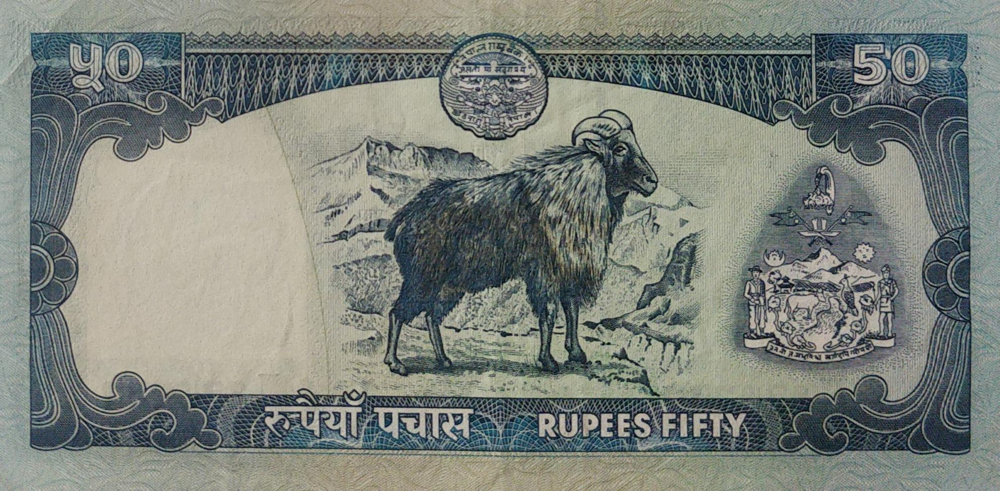
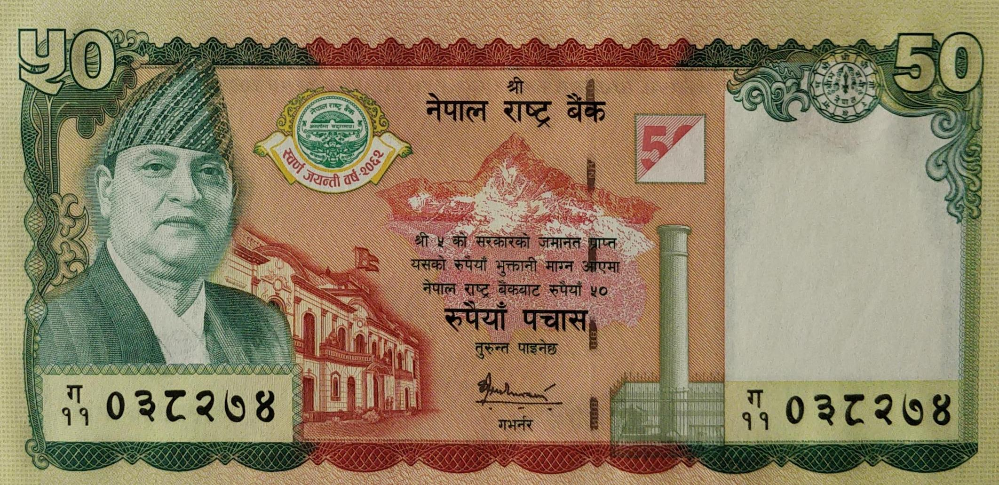
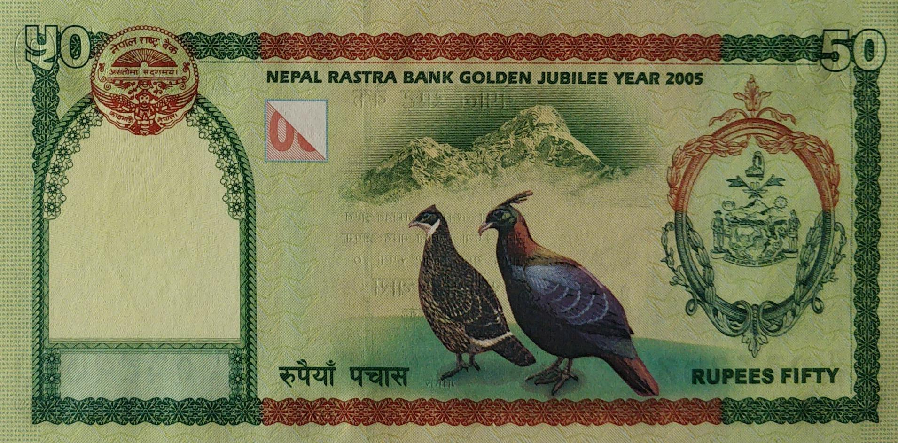

Tilak Bahadur Rawal(Jan 31, 2000 to August 28, 2000) (April 27, 2001 to Jan 17, 2005)


Tilak Bahadur Rawal(Jan 31, 2000 to August 28, 2000) (April 27, 2001 to Jan 17, 2005)


Bijaya Nath Bhattarai(Jan 31, 2005 to June 29, 2007) (July 26, 2009 to March 22, 2010)
- Domination: Rupees 50
- Signature:
- Printer:
- Issued date: Between 2002 to 2006
- Front:
- Back:
- Watermark: Plumed crown
- Size:
Facts:
- 12-Tilak Bahadur Rawal
- 13-Bijaya Nath Bhattarai
- -De La Rue & Company, Ltd, UK
- -Giesecke & Devrient GMBH, Germany
- -Potrait of King Gyanendra with black and blue head design
- -Potrait of King Gyanendra, NRB Golden Jubilee logo, Mt. Machhapuchhre,
NRB Head office building & Ashoka Pillar, Lumbini
- -Image of Himalayan Thar(Male Goat)
- -Mt. Ama Dablam & a pair of national bird Danphe
- -70 x 142 mm